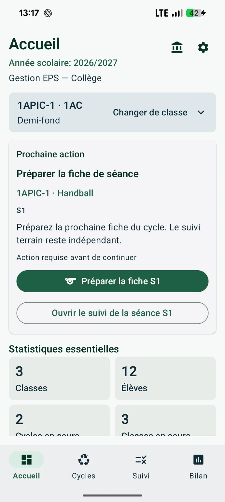
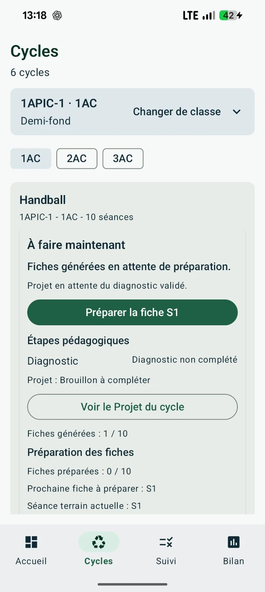
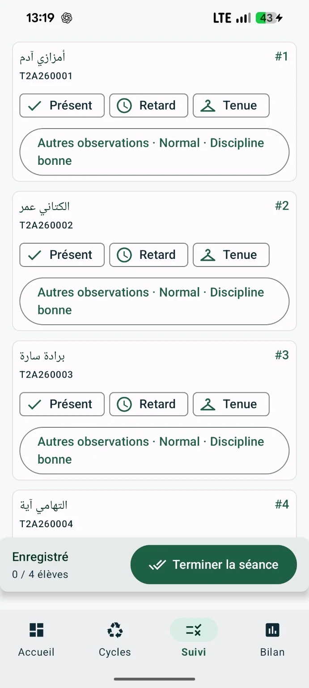
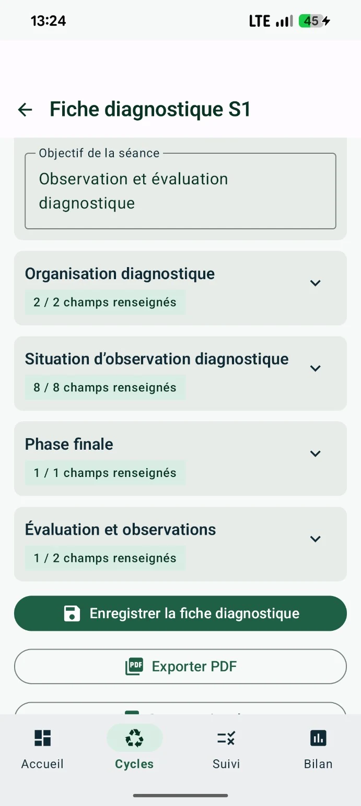
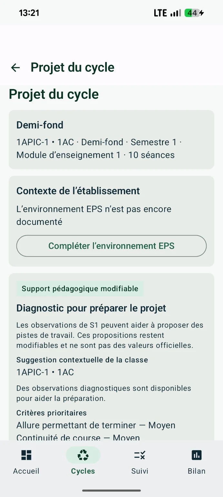
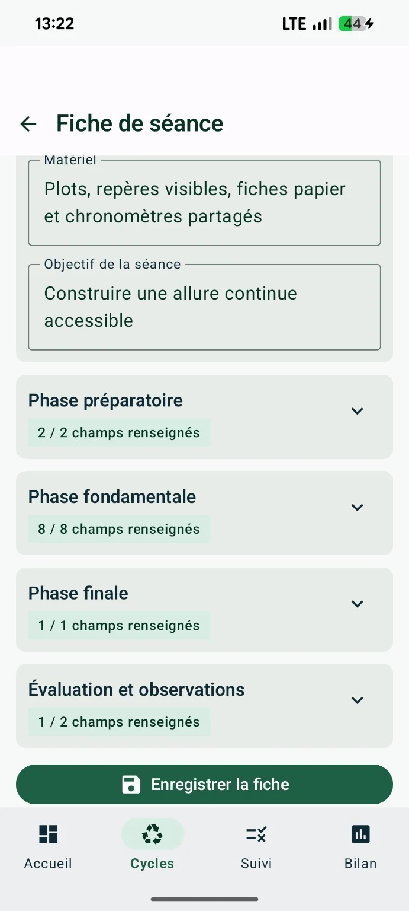
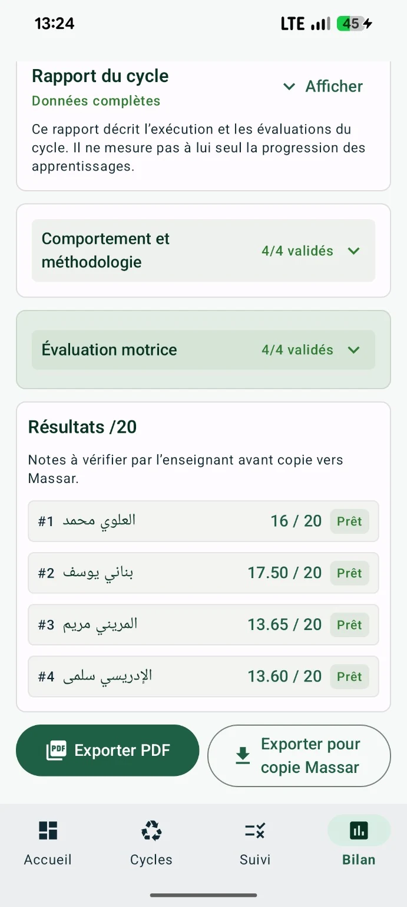
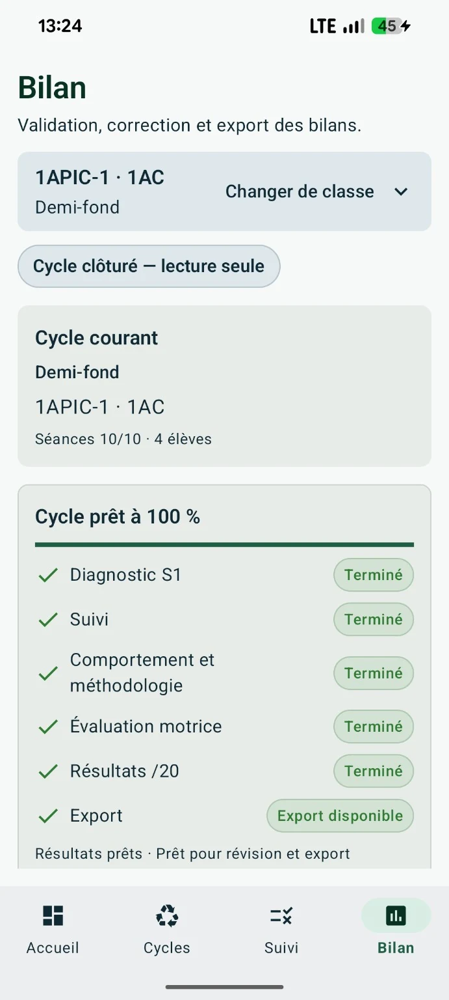

Plusieurs supports, plusieurs ruptures.
- Documents et notes dispersés
- Préparation difficile à relier au terrain
- Suivi, évaluation et exports séparés
- Temps perdu à chercher la prochaine étape
Planifiez l’année et vos cycles, préparez le diagnostic et les séances, suivez vos classes sur le terrain, évaluez puis exportez — dans un seul parcours pensé pour le travail réel de l’enseignant d’EPS.



EPSIQ relie les décisions pédagogiques dans un même parcours et indique clairement la prochaine étape.
Le tableau de bord répond d’abord à une question : que dois-je faire maintenant ?
La version actuelle s’adresse aux enseignants d’EPS du secondaire collégial et qualifiant au Maroc — 1AC, 2AC, 3AC, Tronc commun, 1BAC et 2BAC — qui souhaitent relier préparation, terrain, évaluation et documents sans multiplier les supports.
Une interface structurée autour des classes, des niveaux, des cycles et des séances du secondaire collégial et qualifiant.
Préparation à la maison, consultation avant la séance et suivi rapide sur le terrain depuis un téléphone Android.
Année scolaire, niveaux du collège et du lycée, import de classes, exports et usages pensés pour le contexte professionnel de l’EPS au Maroc.
EPSIQ n’est pas un simple carnet de présence. Il relie les étapes qui composent réellement le travail de l’enseignant.
EPSIQ ne présente pas ses aides pédagogiques comme des normes officielles. L’application distingue ce qui provient de références marocaines vérifiées, ce qui est dérivé pour faciliter l’observation ou l’organisation, et ce qui reste une proposition modifiable à valider par l’enseignant.
Pour l’évaluation : EPSIQ respecte les grilles, critères, barèmes et modalités de notation officiels vérifiés qui ont été intégrés, conformément au niveau, à l’activité et au cadre pédagogique applicable.
La conception pédagogique d’EPSIQ s’appuie notamment sur les orientations pédagogiques de l’EPS du secondaire collégial (OP 2009) et du secondaire qualifiant (OP 2007), ainsi que sur les objectifs, textes et notes organisatrices intégrés après vérification. Lorsqu’un contenu est présenté comme officiel, il est identifié et protégé comme tel.
Les modules d’évaluation d’EPSIQ utilisent les grilles, critères, barèmes et modalités de notation officiels vérifiés lorsqu’ils sont disponibles et intégrés dans le corpus de référence. Les valeurs officielles ne sont ni inventées ni librement modifiées ; les critères adaptés ou dérivés restent clairement distingués.
EPSIQ enrichit sa conception par une veille sur des références et pratiques internationales en EPS, didactique, évaluation et outils numériques éducatifs. Ces apports servent à comparer, inspirer et améliorer l’expérience, sans remplacer les références marocaines applicables.
Un objectif officiel reste protégé. Une synthèse diagnostique ou un critère adapté est présenté comme dérivé. Une situation, une organisation ou une suggestion générée reste une proposition pédagogique modifiable dont la validation finale appartient à l’enseignant.
Une continuité pédagogique lisible, de la préparation au terrain puis à l’évaluation.
Organiser les cycles et retrouver immédiatement le contexte de classe.

Préparer S1, observer, puis exploiter le diagnostic pour orienter le cycle.

Transformer les constats en priorités et propositions pédagogiques modifiables.

Objectif, matériel, phases, évaluation et observations dans une fiche structurée.
Présence, retard, tenue et observations individuelles avec des contrôles lisibles.

Réviser les résultats, clôturer le cycle puis exporter en PDF ou pour copie Massar.
EPSIQ privilégie des actions simples, une lecture forte et un suivi rapide. Le numérique accompagne l’enseignant sans prendre la place de l’enseignement.

Le bilan agit comme une checklist intelligente : il montre ce qui est terminé, ce qui manque et ce qui est prêt pour l’export.
Une action principale, l’état courant et la prochaine étape restent lisibles.
Le cœur du travail pédagogique est conçu pour rester utilisable sur le terrain sans dépendre d’une connexion permanente.
Le fonctionnement actuel est centré sur les données de travail conservées localement sur l’appareil.
Textes, objectifs, grilles et barèmes officiels vérifiés restent distincts des contenus dérivés ou proposés.
EPSIQ accompagne, il ne remplace pas l’enseignant. Les décisions pédagogiques finales restent sous la responsabilité du professeur.
EPSIQ n’est ni une application officielle ni une homologation du ministère. Sa conception cherche à respecter les orientations pédagogiques, textes organisateurs, objectifs, grilles et barèmes officiels vérifiés lorsqu’ils sont intégrés, sans attribuer un statut officiel aux contenus adaptés ou générés.
Massar reste distinct d’EPSIQ. Les exports servent à préparer le travail de copie ou de transfert selon les formats pris en charge.
Après la première expérience, activez votre accès annuel pour poursuivre votre travail avec EPSIQ.
Une question avant l’activation ? Contactez EPSIQ directement.
Besoin d’aide ?EPSIQ met aussi à disposition des ressources pratiques et gratuites pour les enseignants d’EPS, prêtes à télécharger et à utiliser sur le terrain.

Un support imprimable pour organiser l’année, suivre les élèves et conserver une vue synthétique des cycles réalisés.

Un cahier prêt à imprimer pour consigner les séances d’EPS, proposé en deux versions adaptées au Collège et au Lycée.
La version actuelle est conçue pour les enseignants d’EPS du secondaire collégial et qualifiant au Maroc : 1AC, 2AC, 3AC, Tronc commun, 1BAC et 2BAC. L’application est disponible sur Android.
Le cœur des fonctions de préparation, suivi et évaluation est conçu pour un usage local et hors connexion sur le terrain. Une connexion peut être nécessaire pour des services externes ou de futures fonctions en ligne.
Les données pédagogiques de travail restent principalement conservées localement sur l’appareil. Lorsque Product Analytics est activé, seuls des événements techniques et d’usage limités sont transmis à PostHog Cloud EU : aucune liste d’élèves, aucun nom, code Massar, note, observation ou contenu pédagogique n’est transmis. Consultez la politique de confidentialité.
Non. EPSIQ aide l’enseignant à préparer, suivre, évaluer et organiser les résultats. Les fonctions d’export facilitent ensuite la copie ou le transfert vers les outils institutionnels selon les formats pris en charge.
Lorsqu’une référence officielle est intégrée et vérifiée, elle est protégée et clairement distinguée. Les contenus générés ou adaptés pour aider à la préparation restent des propositions pédagogiques modifiables à vérifier par l’enseignant.
EPSIQ s’appuie notamment, lorsque les sources ont été vérifiées et intégrées, sur les orientations pédagogiques de l’EPS du secondaire collégial (OP 2009) et du secondaire qualifiant (OP 2007), ainsi que sur les objectifs, textes, notes organisatrices, grilles d’observation et barèmes d’évaluation applicables. La conception est également enrichie par une veille sur des références et pratiques internationales du domaine, utilisées comme sources d’inspiration et de comparaison, jamais comme normes officielles marocaines.
Oui. Lorsque les grilles, critères, barèmes et modalités de notation officiels ont été vérifiés et intégrés, EPSIQ les utilise comme références protégées pour l’évaluation. Les contenus pédagogiques adaptés, dérivés ou proposés restent distincts et ne sont jamais présentés comme des valeurs officielles.
EPSIQ permet de découvrir une première expérience complète. Pour poursuivre ensuite avec les cycles suivants, un accès annuel peut être activé. Les modalités d’activation sont communiquées clairement avant toute démarche.
Le site et l’interface d’EPSIQ prennent en charge le français et l’arabe. Lorsque la version arabe validée d’un contenu pédagogique n’est pas disponible, EPSIQ peut conserver le contenu source français en l’indiquant clairement plutôt que d’inventer une traduction.
EPSIQ vérifie les nouvelles versions et vous indique lorsqu’une mise à jour est disponible. Le téléchargement s’effectue depuis le canal officiel EPSIQ et l’installation reste sous votre contrôle.
EPSIQ 2.0.3 est disponible sur Android pour les enseignants d’EPS du Collège et du Lycée au Maroc.
Version 2.0.3 · Android 7.0+ · Collège + Lycée · Téléchargement officiel
Installation, fonctionnement, retours de terrain ou signalement d’un problème : contactez-nous.